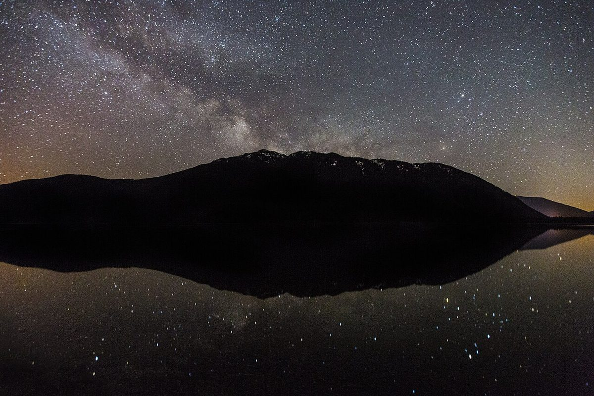
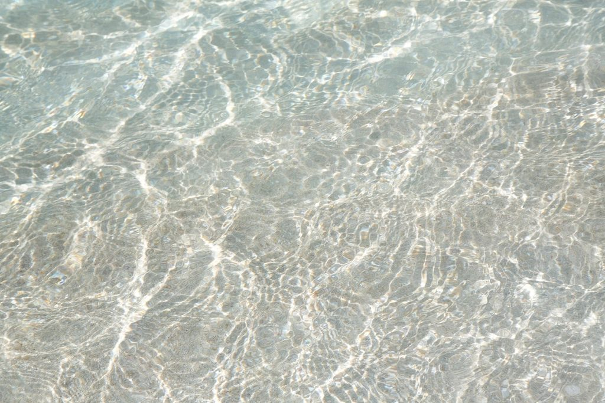

店のこと
店のこと
お店について確認できているのは、所在地・電話番号・Instagramのアカウントだけです。
このページの「想像してみる」部分は、制作側が想像して書いたものです。お店の実際の様子・考え・メニューとは関係がありません。
確認できていること
- 店名は「星の光の澄みわたり」、業種はカフェ
- 所在地は岡山県倉敷市中央2丁目19-10(〒710-0046)
- 電話番号は090-9411-1121
- Instagramのアカウントは @hh_sumiwatari
- 営業時間・定休日・メニュー・価格・ご予約・駐車場は準備中

想像してみる
名前の九文字から
由来は分かりません。制作側は、長めの店名をゆっくり声に出すと、ひとつずつ星を数えるような気持ちになる、と想像しました。お店の実際の姿ではありません。

